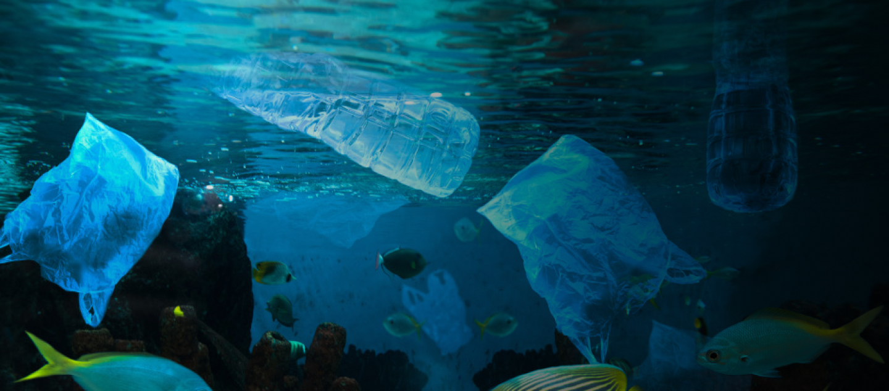

L’acqua copre il 70% della superficie terrestre
E’ una risorsa molto importante per l'uomo e per l'ambiente, è essenziale essere consapevoli dell'inquinamento e agire per prevenirne le conseguenze per la salute e l'ambiente.